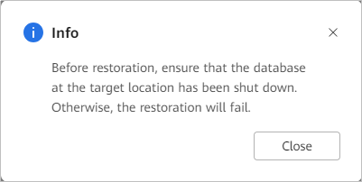

Context
When an Informix/GBase 8s database restoration job is executed, if the client is restarted during the restoration subjob, the restoration subjob reports an error and the Informix/GBase 8s database restoration job fails.
Symptoms
When a restoration job is executed for the Informix/GBase 8s database, an error message is displayed for the restoration sub-job, indicating that the Restore command fails to be executed.
Troubleshooting
Deliver the restoration job again.
- Choose Explore > Copy Data > Databases > Informix/GBase 8s.
- Search for copies by Informix/GBase 8s instance resource or copy. This section describes how to search for copies by resource.
On the Resources tab page, locate the resource to be restored by resource name and click the name.
- Select the resource for copy-based restoration.
- Specify a copy or a point in time for restoration.
You can specify a copy or any point in time between two copies for restoration.
For the OceanProtect E6000 Appliance, when a replication copy is used for restoration, other copies of the resource cannot be replicated at the remote end.- Restoration using a specified copy
- Restoration to a specified point in time
- Select the year, month, and day in sequence to find the copy.
If
 is displayed below a month or day, a copy is generated in the month or on the day.
is displayed below a month or day, a copy is generated in the month or on the day. - On the copy data page, click
 . In the blue part on the timeline, select a copy and click .
. In the blue part on the timeline, select a copy and click .
- For 1.5.0, a maximum of 100 copies can be displayed on the timeline. You can click
 to view all copies.
to view all copies. - During point-in-time restoration, the information about the copy used for restoration cannot be obtained on the management page. Therefore, you cannot view the copy information of the restoration job on pages of the restoration job and related events.
- For 1.5.0, a maximum of 100 copies can be displayed on the timeline. You can click
- In the displayed dialog box, confirm the information and click Close.

- Restore the Informix/GBase 8s database to the original or a new location.Table 1 describes the related parameters.
Table 1 Restoring the Informix/GBase 8s database Parameter
Description
Restore To
Select either Original location or New location.
Location
If you select restoration to Original location, the original location is displayed.
Tag
NOTE:This parameter is available only in 1.6.0 and later versions.
If you set Restore To to New location, you can filter the resource to be restored by tag.
Target Instance
Target instance for restoration, which is mandatory if you select New location for the Restore To parameter.
- Click OK.
- Select the year, month, and day in sequence to find the copy.
- Click OK.